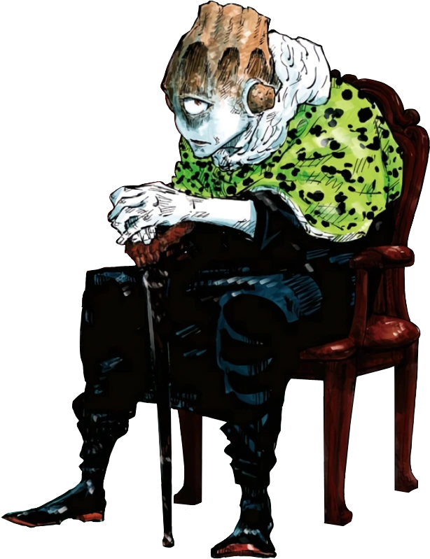
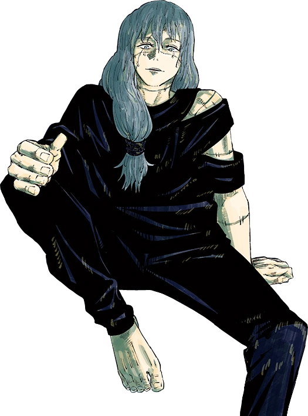
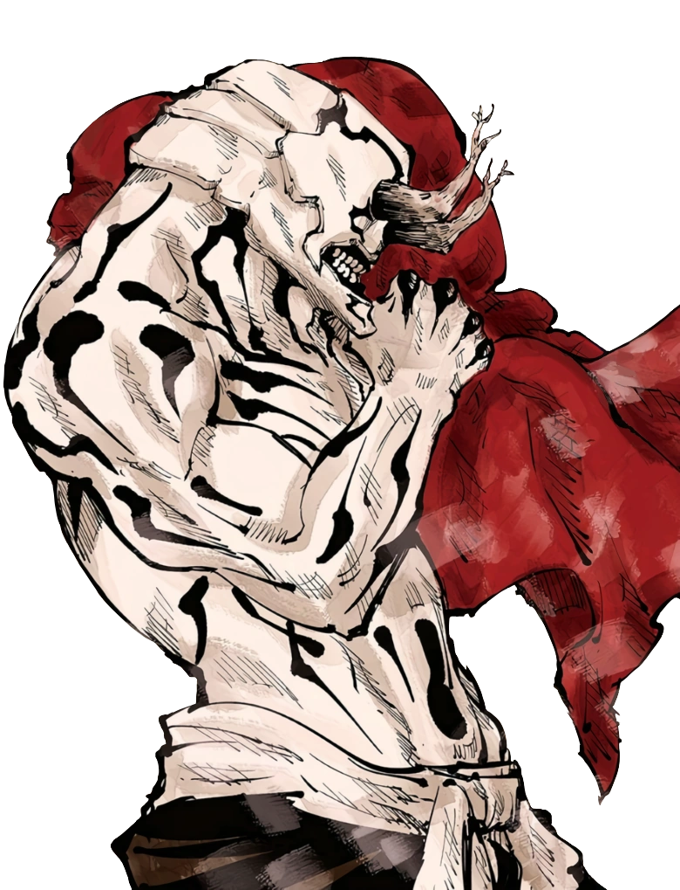
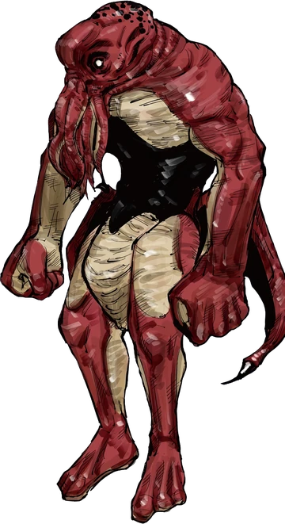

Disaster
Curses
Embodiement of volcanic disatsers. Uses fire type cursed techniques and has a domain

Jogo
Embodiement of volcanic disatsers. Uses fire type cursed techniques and has a domain

Mahito
Embodiement of volcanic disatsers. Uses fire type cursed techniques and has a domain

Hanami
Sea/disaster curse. Commands shikigami like sea creatures; domain creates a lethal oceanic space.
